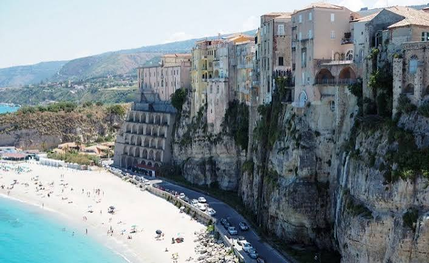

CityLoop Quest — Tropéa


À Tropéa, l’architecture commence par une contrainte : construire sur un promontoire étroit, exposé au vent et aux tremblements de terre. Les rues suivent les anciennes parcelles plutôt qu’un quadrillage régulier. Elles se resserrent, tournent et débouchent soudain sur la lumière de la mer.
Les palais des XVIIIe et XIXe siècles présentent des portails en pierre, des cours intérieures et des escaliers monumentaux. La façade reste souvent sobre, car la richesse se concentrait à l’intérieur. Balcons de fer, consoles sculptées et blasons permettaient néanmoins d’affirmer le rang de la famille.
Après le séisme de 1783, de nombreux bâtiments sont réparés ou reconstruits. Les architectes cherchent davantage de régularité, mais réutilisent murs, caves et matériaux plus anciens. Cette pratique explique les ruptures visibles dans les maçonneries et les plans parfois surprenants.
Sous certaines demeures, des citernes et des conduits en terre cuite géraient l’eau, ressource cruciale sur la falaise. Des espaces souterrains servaient également au stockage des céréales et de l’huile. La ville élégante reposait donc sur une infrastructure domestique ingénieuse.
Le détail le plus spectaculaire reste la relation au vide. Maisons et terrasses semblent posées au bord du rocher, tandis que les murs de soutènement prolongent la falaise. Observer Tropéa depuis la plage révèle mieux que n’importe quel plan cette fusion entre géologie et construction.